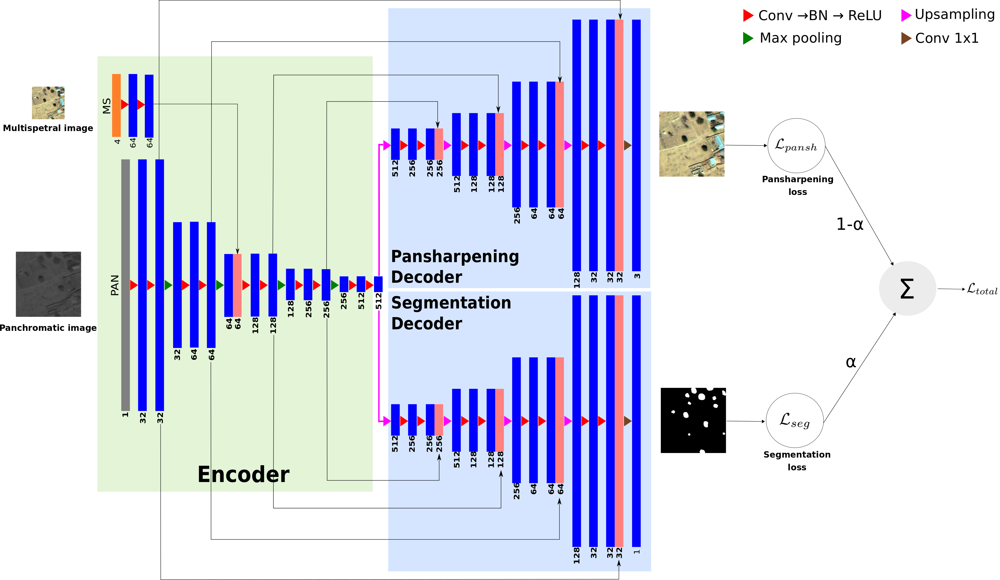
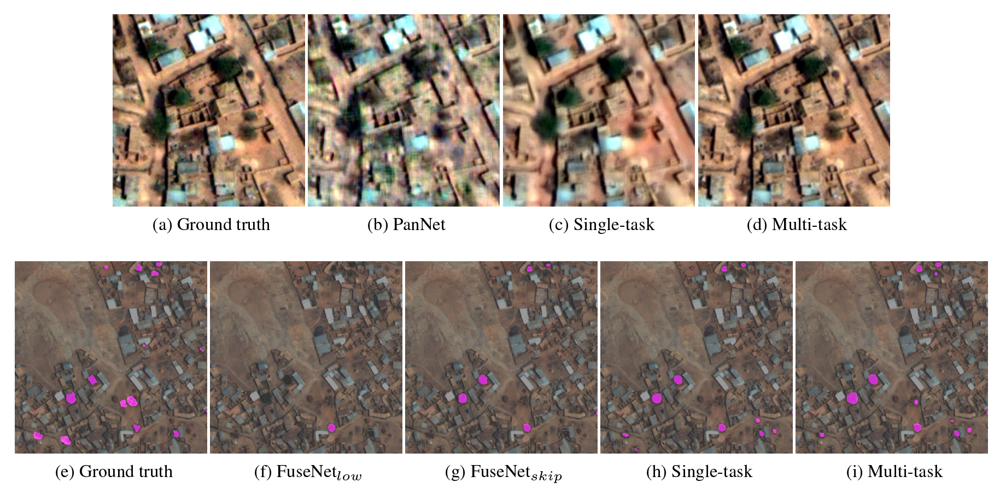

Implementation of the methods described in the paper entitled “Multi-task deep learning for satellite image pansharpening and segmentation”
Citation
Bibtex file to cite this work is here
Multi-task Framework Architecture

Software Architecture
Dependencies
The codes have been developed using the following dependencies:
- Python 3.6.4
- Tensorflow 1.10.0
- Numpy 1.14.2
- GDAL 2.2.4
- The codes have been tested on Fedora 25
- Visualization (Optional)
- We recommend to use Qgis, where the outputs can easily be displayed despite of the image size.
Usage
- The solver sub-directories, namely training_solvers and test_solvers contain solvers, which train a model and test the trained model (See the figure under Software Architecture section).
- To train a model, enter the following command (we assume that you are under multi-task directory, otherwise you will get an error):
- python3 train_solvers/train_solver<id>.py
- To test a trained model, enter this command:
- python3 test_solvers/test_solver<id>.py
- <id> in the commands above determines which solver to run.
Example Visual Results From the World-View3 Dataset
Here, we illustrate several original visual outputs from the World-View3 dataset for different methods including our multi-task framework.
